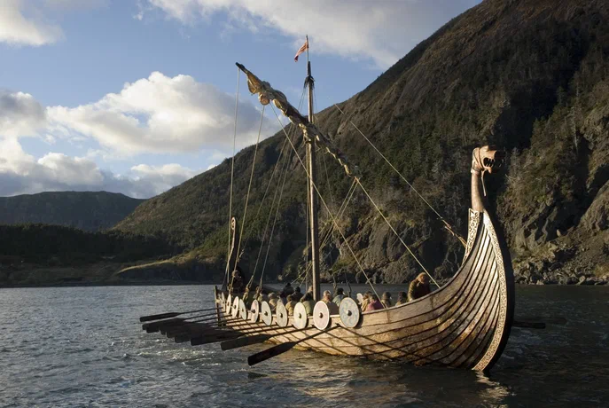

История кораблей
История кораблей охватывает тысячелетия развития технологий и отражает ключевые этапы человеческой цивилизации. От примитивных плотов до современных атомных ледоколов — эволюция судов тесно связана с потребностями торговли, войны, исследований и технологическим прогрессом.
Древние времена
Первые плавучие средства появились около 8–10 тысяч лет до н. э. Люди использовали брёвна, связанные лианами, а позже создали плоты из тростника (как в Древнем Египте) и лодки-долблёнки, выдолбленные из ствола дерева.
Древний Египет
(около 3000 г. до н. э.) — одни из первых начали строить деревянные суда для торговли по Нилу и Средиземному морю. «Солнечная лодка фараона Хеопса» (около 2500 г. до н. э.) считается шедевром древнего кораблестроения.
Финикийцы
(около 1200 г. до н. э.) создали первые торговые и военные флотилии. Их корабли достигали берегов Британии и Западной Африки. Финикийцы использовали килевой корпус, что повысило мореходность, и два рулевых весла для управления.
Древняя Греция и Рим
В V веке до н. э. греки усовершенствовали военные корабли — триремы с тремя рядами вёсел и таранами на носу. Римляне создали крупнейший флот античного мира, перевозивший товары, легионы и даже боевых слонов.
Викинги
(VIII–IX вв.) — их драккары были длинными узкими кораблями, способными преодолевать океан. Викинги достигли Исландии, Гренландии и даже Северной Америки.
Эпоха парусного флота
Средние века и Ренессанс
Появились каравеллы (например, «Нинья», «Пинта», «Санта-Мария»), которые позволили Колумбу открыть Америку в 1492 году. В XVI–XVIII веках галеоны стали ведущими боевыми кораблями, а флейты — торговыми судами.
Эпоха Великих географических открытий
(XV–XVII вв.) — корабли стали инструментами экспансии. Васко да Гама в 1498 году достиг Индии морем, а Магеллан в 1519–1522 гг. совершил первое кругосветное плавание.
Промышленная революция
Паровые машины
В 1807 году Роберт Фултон представил первый коммерчески успешный пароход «Клермонт». В XIX веке появились трансатлантические лайнеры, такие как «Great Eastern» и «Britannia».
Развитие двигателей
В конце XIX века на кораблях стали устанавливать паровые турбины и двигатели внутреннего сгорания. В XX веке появились ядерные энергетические установки.
Ледоколы
В 1864 году появился первый ледокол «Пайлот», способный раскалывать тонкий лёд. В 1897 году российский адмирал Степан Макаров предложил создать мощный ледокол для арктических вод.
Современные технологии
Авианосцы и подводные лодки
В XX веке появились авианосцы, способные нести десятки самолётов, и подводные лодки, ставшие важным элементом военно-морских сил. Современные подводные лодки делятся на атомные и дизельные, а также на ракетоносцы, торпедные и специального назначения.
Контейнеровозы и круизные лайнеры
В XXI веке корабли стали ещё более специализированными. Контейнеровозы перевозят грузы по всему миру, а круизные лайнеры предлагают комфортабельные путешествия.
Цифровые технологии
Современные суда оснащаются системами автоматизации, навигации и связи, что повышает безопасность и эффективность мореплавания.